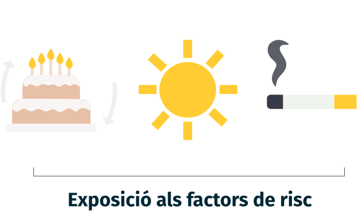

Analitza les mostres
A continuació simularem el que passa quan arriben dues mostres de pacients al laboratori de l’hospital. Posa’t a la pell de la persona de l’equip científic que les rep.
Com ho farem?
Analitza les mostres per poder diagnosticar els pacients i assignar-los un tractament. Fes-ho seguint les següents passes:

01.
Revisa les dades del pacient, el tipus de càncer i l'exposició als factors de risc.

02.
Anàlitza l'ADN per obtenir totes les mutacions.
03.
Identifica quines mutacions són impulsores de càncer i si existeix un tractament.
04.
Analitza els resultats: Mutacions impulsores i teràpies personalitzades.